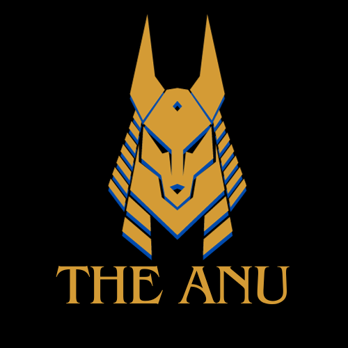
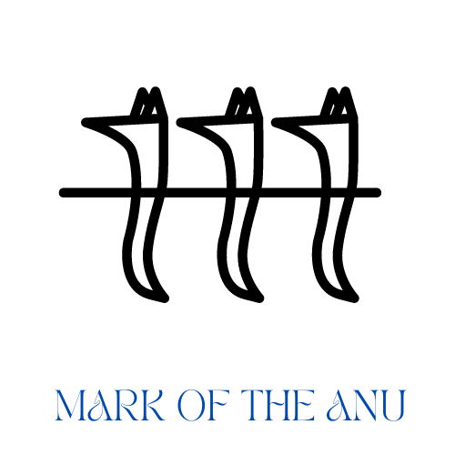
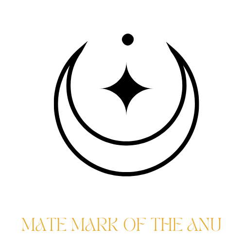

The Anu
Guardians of the border between life and death. They are born to it, they run as packs, and they take the shape of wild canines.
“Words fade. The hunt endures.”
Lines without a tag are settled canon from the Anu Canon Reference (v3). Tags mark anything less settled.
At a glance
- Nok name
- Ánukhèt. Devotional names: Anpésùmù, Anpésùmùna, Anpésùmùkhèt.
- Patrons
- ’Anpésùmün, the Opener of Ways, and Bùnumün, the Great Canina Spirit.
- Calling
- Guide souls to ’Ätáru, help restless souls find peace, stop grave-robbers, and hunt reckless or rabid Sekh and Lamiae.
- Language
- Nok, the tongue of Thàmün’kẹbùkhẹt, the Motherland. Descent is Nok.
- Lifespan
- About 150 to 200 years barring death in battle.
- Motto of the young
- “We were once human, but we rose to meet the Dream.”
Origin
In the early Dream, certain humans watched the borders: gravekeepers, hunters, midwives of the dying and mourners. ’Anpésùmün chose them and gave them sight beyond life. Bùnumün lent them the strength and forms of the wild canines. They were bound to the Dream Thread and marked with the düfari. The original rite is lost. Canon
- The name of the original rite. The working title is “The Binding of Pack and Thread,” with no Nok form yet Open
Born, not made. One is Anu by blood. A child of an Anu and a human keeps full Anu capability, and anyone with Anu blood can become active under the right conditions. A legend says a mortal can still be called by the old rite. It stays a legend.
The Anu share the Sekh’s pantheon and differ in their ceremonies. See Nẹránamün and the moral framework, where the Anu edition of the 30 Threads is given.
Life cycle
| Stage | What happens |
|---|---|
| Gestation | Six months, nine at the latest. Newborns look human. |
| Pups | Called sórómètù and raised in packs. They have no night vision or notable abilities until initiation. Puberty brings strength spurts, hunger pangs and bone aches. |
| Initiation | Nineteen is the standard age. Packs and hard events can move it. Some packs hold a solo rite before twelve, and some Anu receive their animal in their teens. |
| Adulthood | From initiation, ageing slows. Physical age falls about three to five years behind actual age through the early decades, and the gap widens with time. See the table below. |
| Death | The animal spirit enters the Great Flow and is reborn in a new Anu. Stronger spirits may keep memories. The human soul continues as a Shadow Walker, a spirit wolf that hunts and investigates from beyond the Veil. |
How an Anu ages
Until initiation an Anu grows like any child. After it, ageing slows in three stages: about one physical year for every 1.2 years lived up to physical 45, one for every 2.2 years up to about actual age 100, and one for every 3.75 years after that. Proposed
| Actual age | Looks about |
|---|---|
| 19 | 19 |
| 30 | 28 |
| 40 | 36 |
| 50 | 45 |
| 75 | 56 |
| 100 | 68 |
| 125 | 74 |
| 150 | 81 |
| 175 | 88 |
| 200 | 94 |
The curve is built from your own anchors: a lifespan of 150 to 200 years, a gap of three to five years in adulthood, and a gap that widens with age. Profile ages from the 2025 baseline need recomputing against it.
Shape and body
- Shifting. Any canine except the domestic dog. Each Anu has one form per species, larger and stronger than the usual animal. There is no pain after the first shift, and clothes are preserved.
- Senses. Enhanced speed, strength, durability and vision, especially at night. Smell is strongest: they can smell lies through pheromones, and they know a person by their scent.
- Healing. Minor to medium injuries close in minutes to an hour. Major injuries need life support or surgery.
- Eyes. Any natural colour, with round human-like pupils and a blue eyeshine in sharp light. There is no oval-pupil tell, unlike the Sekh. A corrupted Anu has black eyes when shifted. Decided
- Voice. Howls and whines work even in human form. Spirit howls are heard only by kin, spirits and dogs.
- Pack mind. A telepathic link that opens and closes at will within about 25 miles. Howls carry about 50 miles. Mates link thoughts and emotions up to 50 miles and feel each other’s danger at any distance.
The elder tier
Elders can compel a restless spirit to speak, or escort one across the Veil. The cost is left open on purpose. Alphas and Lunas can extend the pack link’s reach and send calm through it, but they cannot lend strength. Placeholder
Weaknesses
- Corruption. An Anu who turns from the light (subterfuge, blood magic, praising other gods, needless killing) sees their spirit corrupt. They gain strength and lose mind, and they are banished. A corrupted Anu caught by another Anu is burned and offered to ’Ògùsémün. Decided
- Some believe corruption can pass by a bite or a ritual meal. Part of this is superstition, and it drives real choices, including amputation to stop it.
- Lamia blood. A large amount triggers a berserker state lasting twelve hours to three days. It is hard to control and stains the soul with repeated use. Recovery sleep runs about one day per twelve hours of rage.
- Sekh blood. It works as an accelerant and an aphrodisiac, like a stimulant, with the consequences to match.
Holy steel and infernal aura
The Anu share the Sekh’s base resistances. They resist infernal and holy steel somewhat and can still be cut by both. Near a powerful Vatrajarə they feel a mild warmth or pressure that reads as reverence. Prepared Anu stand fairly well against an aura flare, and are not its intended target.
The forms
The Nok name of each canine form. The domestic dog is excluded.
| Form | Nok | Form | Nok |
|---|---|---|---|
| Red wolf | zhire soro | Grey wolf | zhige soro |
| Algonquin wolf | thanikwin soro | African wolf | ’kebukhet soro |
| Coyote | kasiki | Ethiopian wolf | ’kebushiri soro |
| Golden jackal | zhira fari | Dhole | boronu |
| African wild dog | ’kebukhet bunu | Side-striped jackal | n’kwosi fari |
| Black-backed jackal | zhibe n’khot fari | Dire wolf | sauni soro |
| Arctic wolf | wózèsóró | Mexican wolf | ranashímù sóró |
| Iberian wolf | makénísóró | Italian wolf | yeizáyùsóró |
| Alaskan Interior wolf | wózèthímùsóró | Great Plains wolf | Khètùkùrèwùsóró |
| Mackenzie Valley wolf | Kenyèz’kogoikùrèsóró | Arabian wolf | shíkùrèsóró |
| British Columbian wolf | kómbasóró | Hokkaido wolf | haidosóró |
| Honshu wolf | hodosóró |
Anu wolf names in the stories use the natural range of a species. That range sometimes follows the person’s own ancestry, and sometimes does not.
Emblem and marks


